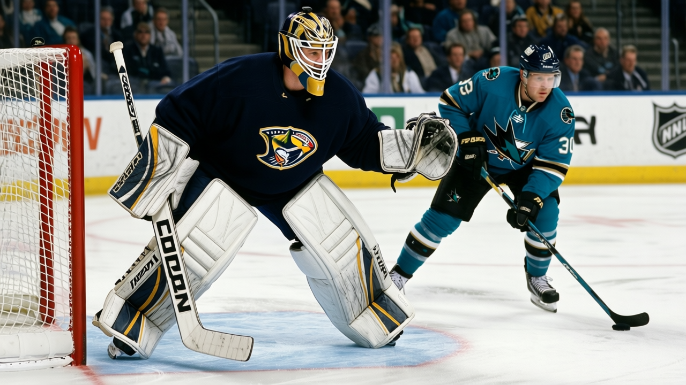

Notes from the Central: Nashville sits at 58 points, and nobody is writing about it
Four straight wins, 13-7 on the road, and a plus-29 differential the rest of the conference keeps overlooking
 Ray CallumSenior correspondent · Home Ice Network
Ray CallumSenior correspondent · Home Ice Network
 Nashville Predators has 58 points in 41 games.
Nashville Predators has 58 points in 41 games.  Dallas Stars has 58 points in 44. Tied at the top of the Western Conference. Nashville sits fourth in the league in goal differential at plus-29, behind only
Dallas Stars has 58 points in 44. Tied at the top of the Western Conference. Nashville sits fourth in the league in goal differential at plus-29, behind only  Toronto Maple Leafs at plus-129,
Toronto Maple Leafs at plus-129,  Colorado Avalanche at plus-44 and Dallas at plus-32. The Predators have lost 10 games in regulation, the fewest in the Western Conference and second in the league behind Toronto's 6. They have allowed 135 goals in 41 games. Only Toronto,
Colorado Avalanche at plus-44 and Dallas at plus-32. The Predators have lost 10 games in regulation, the fewest in the Western Conference and second in the league behind Toronto's 6. They have allowed 135 goals in 41 games. Only Toronto,  New Jersey Devils and
New Jersey Devils and  Mighty Ducks of Anaheim have given up fewer.
Mighty Ducks of Anaheim have given up fewer.
Four straight wins. The last 10: 8 wins, 1 regulation loss, 1 overtime loss, 42 goals for, 28 against. They beat  San Jose Sharks 3-1 on January 7 at home, 22 shots on net to 18.
San Jose Sharks 3-1 on January 7 at home, 22 shots on net to 18.
 Greg Johnson80, whose overall grade is 82, has been out with a neck designation, hurt December 1 or the following day. His return date is January 11.
Greg Johnson80, whose overall grade is 82, has been out with a neck designation, hurt December 1 or the following day. His return date is January 11.  Rem Murray72, out with an elbow, returns the same day. Jonas Andersson70 carries a concussion designation, due back January 18. Three men on the shelf, two back tomorrow, and the club is 8 points clear of
Rem Murray72, out with an elbow, returns the same day. Jonas Andersson70 carries a concussion designation, due back January 18. Three men on the shelf, two back tomorrow, and the club is 8 points clear of  Detroit Red Wings at the top of the Central division.
Detroit Red Wings at the top of the Central division.
Road and crease
Nashville is 14-7 at home and 13-7 on the road. The 13 wins in 20 road games trail only Colorado Avalanche's 14 in 19 among Western Conference clubs. Colorado is 12-10 at home, the reverse of Nashville's balance.
 Tomas Vokoun90 has started 33 of 41 games, an 80 percent share. Jan Lasak75 has 10 starts, 24 percent. The Predators have carried a conference-top point total through 28 injury spells and 186 days lost, the 3rd-highest spell count in the league.
Tomas Vokoun90 has started 33 of 41 games, an 80 percent share. Jan Lasak75 has 10 starts, 24 percent. The Predators have carried a conference-top point total through 28 injury spells and 186 days lost, the 3rd-highest spell count in the league.
Two games this week:  Phoenix Coyotes at home on the 11th, at
Phoenix Coyotes at home on the 11th, at  Chicago Blackhawks on the 12th. Dallas plays Colorado Avalanche the same night. Nashville holds a game in hand either way.
Chicago Blackhawks on the 12th. Dallas plays Colorado Avalanche the same night. Nashville holds a game in hand either way.